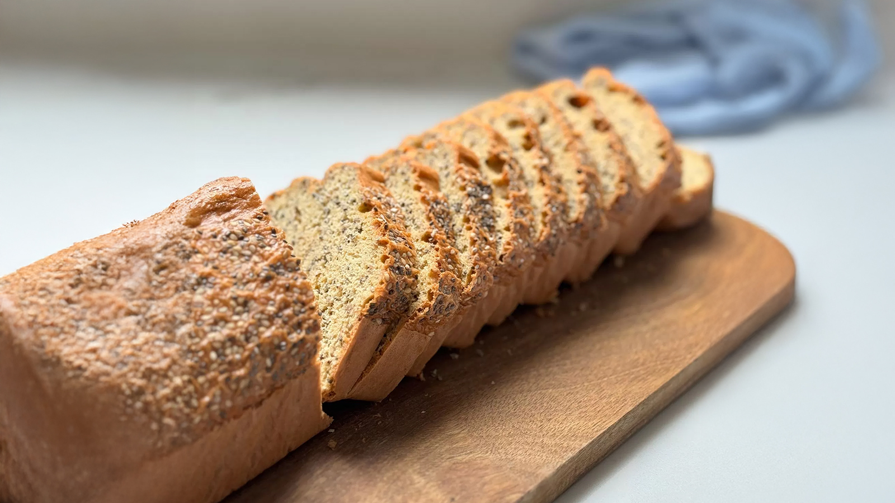

← Nazaj na recepte
Ime Recepta (Recipe Name)

⏱️ 15 min | 👤 2 Osebi | 🏷️ Zajtrk
🛒 Sestavine
- 200g moke
- 2 jajca
- 100ml mleka
- Ščepec soli
👨🍳 Priprava
- V veliki skledi zmešajte suhe sestavine.
- Dodajte jajca in mleko ter dobro premešajte.
- Pecite v ponvi na srednjem ognju.
- Postrezite toplo.
💡 Nasvet: Tukaj lahko napišete kakšen skrivni nasvet za kuhanje!